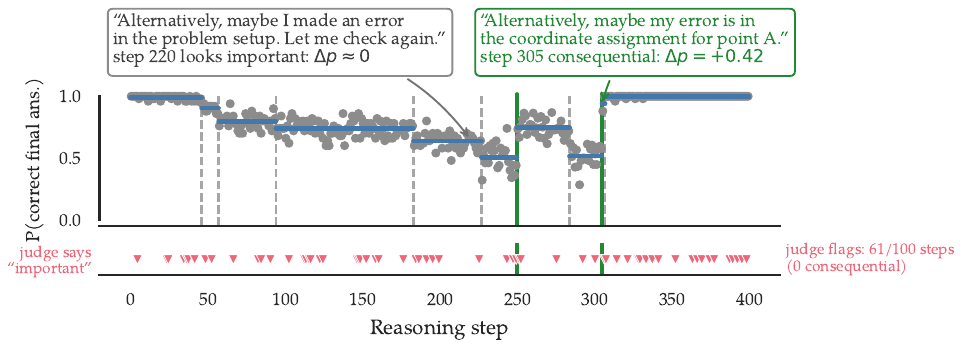
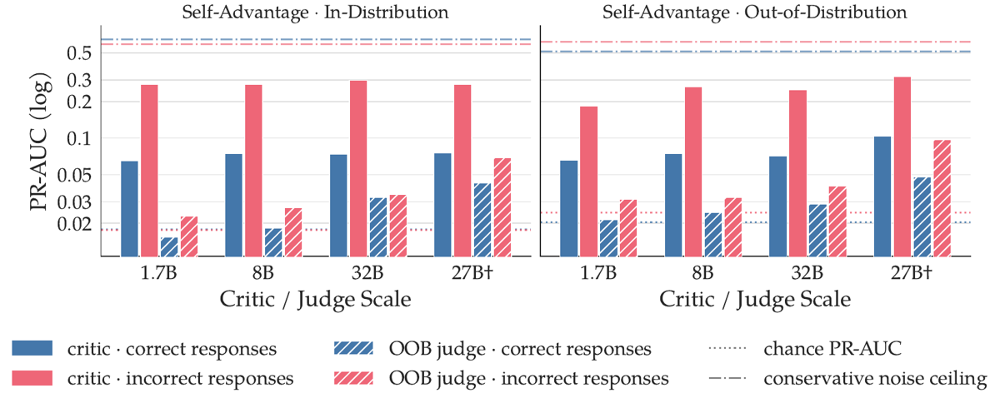
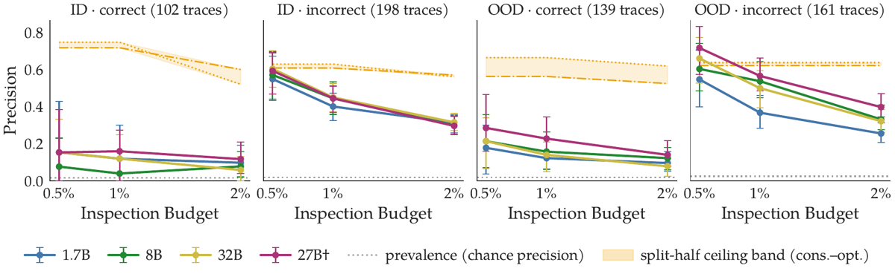

TL;DR : l'importance d'une étape de CoT est opérationnalisée comme son advantage RL estimé par rollouts Monte Carlo (N=50 par préfixe) ; les étapes « consequential » (|A| > 0.1 certifié) sont rares (~1.8–2.3 % des steps en non-thinking, ~0.5 % en thinking) ; des juges LLM zero-shot les retrouvent à peine au-dessus de la prévalence et des critics fine-tunés n'atteignent le plafond de bruit que sur les réponses fausses, pas sur les réponses correctes.
Claim principal, précisément : sur traces Qwen3-1.7B non-thinking, en self-advantage, le meilleur juge out-of-the-box (Qwen3.6-27B, prompting « direct-importance ») atteint PR-AUC 0.065 ID / 0.080 OOD contre une chance de 0.017–0.022 et un split-half noise ceiling ≈0.6, soit 9× sous le plafond en ID et 6× en OOD [§5, App. D.2] ; les critics fine-tunés montent à PR-AUC 0.28–0.30 (ID) sur réponses incorrectes (≈ la moitié du plafond conservateur ≈0.6, 10–15× la chance) mais restent à 0.065–0.10 sur réponses correctes, soit 10–20 % du plafond 0.51–0.64 [§5]. Le scaling du critic est plat en self-advantage (1.7B ≈ Qwen3.6-27B en ID) [§5].
⚠️ Pour la revue : c'est le papier qui attaque frontalement le présupposé des PRM et des rubriques de process — mais il ne teste pas un PRM entraîné pour du RL, il teste la décodabilité textuelle de l'advantage. Voir §7 pour la portée exacte.
\n\n (sentence-level pour le volet Scruples) ;
3. pour chaque préfixe s_t, N=50 rollouts du même modèle (temp 1.0, top-p 0.95) [App. C] → V̂(s_t)=k_t/50 ;
4. labellisation consequential via PELT + filtre Beta + localisation (voir §3) ;
5. lignes après l'étape d'émission de la réponse finale supprimées (rollouts dégénérés), séries < 2 points écartées [App. A.1].dataset_difficulty]. Longueurs : dizaines à 100+ steps en non-thinking, centaines à 1000+ en thinking [App. B].gpt-5.4-mini-2026-03-17) [§4]. Les labels Scruples viennent des votes de la communauté Reddit (top 100 par consensus) [App. E.1].⚠️ Pas d'environnement RL : le « harness » est un harness de mesure d'advantage, réutilisable tel quel comme instrumentation d'un env.
s_t = x ∘ a_1 ∘ … ∘ a_{t-1} avec le chat-template inclus [§3]. Single-turn (une génération continue), pas d'outils, pas de sandbox.Question: <question>{question}</question> / Gold target: <target>{gold_target}</target> / Full response: <response>{full_response}</response> / Reasoning step to evaluate: <reasoning_step>{reasoning_step}</reasoning_step>
⚠️ Noter que la réponse complète est dans le contexte du juge : le juge voit l'aval de l'étape, ce qui est plus généreux qu'un PRM en ligne (qui ne voit que le préfixe). Le résultat négatif est donc d'autant plus fort.\boxed{} (advantage ∈ [-1,1] en mode direct, ou valeur Q ∈ [0,1] en mode value-derived) ; critic → tête de régression sur le dernier hidden state [App. D.2, D.3].\boxed{} après le bloc de reasoning [App. D.2] ; taux d'échec de parsing non précisé (⚠️ non négligeable pour un juge 1.7B en thinking mode). Échecs d'extraction de réponse du générateur : traités par le filtre d'exclusion (voir §1)."Alternatively, maybe I made an error in the problem setup. Let me check again." → Δp ≈ 0 ; step 305 "Alternatively, maybe my error is in the coordinate assignment for point A." → Δp = +0.42 [§1, Fig. 1].Deux niveaux à distinguer : (a) le reward terminal qui définit la vérité terrain, (b) le « vérifieur de process » qui est l'objet évalué.
r : Σ* → {0,1} [§3], deux variantes :r = 1[réponse finale correcte] → advantage correctness-based ;r = 1[réponse finale == réponse de la trace originale] → self-advantage. C'est le défaut partout sauf mention contraire [§3].
Point clé : le self-advantage ne nécessite aucune vérité terrain — seulement une fonction d'égalité entre réponses finales. C'est la propriété la plus transférable du papier (voir §9).A(s,a) = Q(s,a) − V(s) avec Q(s,a) = V(s ∘ a) [§3, App. A.1], estimé Â = Q̂ − V̂ sur N=50 rollouts [éq. 3].consequential / uninformative [§3.1 = sec:eval_stats, App. A.1] — c'est la définition opérationnelle à retenir :
1. la trajectoire de V̂ sur les steps est modélisée piecewise constant ; sous ce modèle, un step intérieur à un segment a advantage nul et le saut à une frontière est l'advantage du step frontière ;
2. segmentation par PELT avec coût binomial exact C(S) = −[K log p̂ + (N−K) log(1−p̂)], longueur minimale de segment = 2 points, pénalité λ calibrée par cellule (modèle × mode × dataset) sur 1 000 séries nulles simulées pour un FPR par série ≤ 2 % → λ=5 (GSM8K), λ=8 (cellules AIME thinking + Qwen3-4B/AIME 26), λ=6 ailleurs ;
3. filtre d'effet : posteriors Beta(1+K, 1+N−K) sur les niveaux avant/après, 10⁵ tirages de Δp ; la frontière passe ssi l'IC crédible à 95 % exclut 0 et P(|Δp| > δ) ≥ 0.95 avec δ = 0.1 ;
4. filtre de localisation : l'ensemble de confiance profile-likelihood (±2 unités de log-vraisemblance) doit être un seul step ; ~25 % des frontières survivantes sont jetées à cette étape.
Résultat : 7 563 / 17 310 frontières conservées (self-adv), médiane des sauts conservés |Δp| ≈ 0.31.changepoint_roc].You are an expert evaluator of reasoning traces from a language model. Given a question, gold target, full response, and a specific reasoning step, estimate the step's advantage A in [-1, 1]: the change this step causes in the proportion of sampled continuations that end at the same final answer as the full response for this trace (proportion after the step minus proportion before it). A step that locks in the eventual answer has large positive A; a step that derails it has negative A; an inconsequential step has A near 0. Most steps are routine: continuations were already headed to the same answer, so |A| is small. Before answering, reason carefully about the counterfactual: how likely was this final answer before the step, and how likely after it? Reserve values near +1 or -1 for steps that single-handedly decide or derail the outcome. […] output a single number in \boxed{} with two decimals (e.g. \boxed{0.05}, \boxed{-0.30}).
Noter que le prompt donne au juge le prior de rareté (« most steps are routine ») : l'échec n'est pas un défaut de calibration naïve. Prompt « value estimation » (mode value-derived) : estimer Q ∈ [0,1] = proportion de continuations finissant sur la même réponse finale, puis différencier les préfixes consécutifs. Prompt « advantage regression » pour les critics WMSE : score = Q − P. - Robustesse / hacking : le vérifieur n'est pas attaqué (pas de policy optimisée contre lui). Mais le papier fournit l'argument de hacking le plus utile du corpus par la bande : une rubrique/juge ancré sur le texte, s'il servait de reward de process, sélectionnerait un ensemble de steps dont ≤35 % coïncident avec les steps réellement consequential.
Pas de RL. Ce qui est optimisé, ce sont les critics (régression supervisée) [App. D.3] :
w = 1 + α·min(1, |y|/τ) avec α=2, τ=0.1, échantillonnage équilibré par bins de |label| ;
2. Value BCE — BCE contre la value par préfixe V(s_t) ∈ [0,1], advantage dérivé post-hoc en différenciant les prédictions consécutives (défaut du papier) ;
3. Value BCE + rank — + hinge de ranking par paires intra-trace (poids 0.5, marge 0.05, ≤10 paires par run).Pas de reward hacking au sens RL (aucune policy n'est optimisée). Les failure modes rapportés sont ceux de la mesure et des juges :
| Comportement | Comment détecté | Correction |
|---|---|---|
| z-test par step : masse de faux positifs (14–25 % des séries nulles flaguées ; 25 % en thinking) | simulations corpus-matched + réplication split-half (10–36 %) [App. A.3] | remplacé par PELT + pooling de segments ; BH rejeté car puissance effondrée |
| Rampes graduelles attribuées à tort à un step unique (81 % des rampes de largeur 5 reçoivent un label) | simulation de violations + « ramp fingerprint » (re-segmentation à λ/2, détection d'escaliers de même signe) | pas corrigé — borné : 2.2–13.0 % des séries ; c'est le failure mode principal du pipeline, reconnu comme tel [App. A.2] |
| Frontières mal localisées (multi-step confidence set) | profile-likelihood par frontière | ~25 % des frontières jetées plutôt qu'attribuées à leur position ML [App. A.1] |
| Spike d'un seul step qui revient immédiatement : jamais labellisé | simulation | accepté (longueur min de segment = 2) ; <0.5 % du volume [App. A.2] |
| Juge LLM qui sur-flague : 61/100 steps marqués « important », 0 réellement consequential sur la trace d'exemple | Fig. 1 | — (c'est le résultat, pas un bug) |
| Mode « value-derived » du juge : à la chance à toutes les échelles (0.018–0.027 vs chance 0.017–0.022) | App. D.2 | abandonné au profit du prompting « direct-importance » |
| Asymétrie correct/incorrect possiblement spurious | auto-critique des auteurs [§6] | non corrigé : les réponses incorrectes ont souvent un step « final answer emission » consequential, proxy facile qui peut gonfler la performance sur ce stratum |
Comportements émergents intéressants (côté générateur, pas côté reward) [§4] :
- les gains de perf par le thinking et par l'échelle viennent presque entièrement de réponses dont la value est haute dès le premier step : high throughout 24 % → 61 % (thinking on), 25 % → 39 % (1.7B → 8B), en absorbant la masse de never high → le raisonnement ne « découvre » pas la réponse, il la confirme ;
- les modèles sont rarement verrouillés sur une mauvaise réponse dès le départ (1–3 % non-thinking, 12.4 % thinking) ;
- le modèle thinking arrive à sa mauvaise réponse par gradual climb 59 % vs sudden climb 24 % ; les non-thinking l'inverse (48–56 % sudden vs 39–46 % gradual) ;
- un cue dans le prompt déterminise le raisonnement : 58 % des réponses base ont ≥1 step consequential contre 15 % avec cue, et 5.0 % vs 1.4 % des steps [§4, App. E.2] ; autrement dit un CoT non fidèle est aussi un CoT vide d'advantage — ce qui donne un détecteur de non-fidélité sans perturbation du prompt.
app:add-nonthink-results].| Chiffre annoncé | Où il est annoncé | Source dans le papier | Verdict |
|---|---|---|---|
| « sufficiently capable LLMs can outperform a prevalence baseline but fall well short of a noise ceiling » | abstract | juges direct-importance 0.021 → 0.065 (ID) et 0.027 → 0.080 (OOD) de 1.7B à Qwen3.6-27B, chance 0.017–0.022, ceiling ≈0.6 [App. D.2, Fig. critic] |
confirmé mais sur-généralisé : vrai uniquement en prompting direct-importance ; le mode value-derived est à la chance à toutes les échelles (0.018–0.027) [App. D.2] |
| « 9× below the ID noise ceiling and 6× below the OOD noise ceiling » (meilleur juge) | §5 | 0.065 vs ≈0.6 → 9.2× ; 0.080 vs ceiling OOD → 6× | confirmé à l'arrondi près ; ⚠️ le dénominateur OOD implique un ceiling ≈0.48 alors que App. D.2 écrit « ≈0.6 » et « ≥7× » — les ceilings existent en versions conservative/optimistic et stratifiées (ID correct ≈0.6, ID incorrect ≈0.55, OOD correct ≈0.51, OOD incorrect ≈0.60 sur la figure), donc le dénominateur exact n'est pas explicité dans le texte |
| « Fine-tuning […] yields strong improvement for incorrect responses but remains distant from ceiling for correct responses » | abstract | incorrect : PR-AUC 0.28–0.30 ID / 0.18–0.32 OOD = 10–15× chance ≈ moitié du ceiling conservateur ≈0.6 ; correct : 0.065–0.10 = 3.5–5× chance = 10–20 % du ceiling 0.51–0.64 [§5] | confirmé |
| « approaching the noise ceiling on responses that end in an incorrect answer » | intro | vrai au budget d'inspection 0.5 % : precision 0.55–0.60 (ID) / 0.55–0.72 (OOD) vs ceilings 0.61–0.62 ; faux en PR-AUC (moitié du ceiling) et la précision retombe à ~la moitié du ceiling dès 2 % de budget [§5, Fig. critic-budget] |
sur-généralisé (vrai dans le seul réglage « top 0.5 % des steps ») |
| « an asymmetry that holds across generator scale and reasoning style » | intro | gen-8B : PR-AUC population 0.18–0.28 ID vs ceiling 0.57, et au budget 0.5 % sur incorrect les plus gros critics touchent 0.63–0.64 vs ceiling 0.57 [App. F.2] ; thinking : critics 0.037–0.066 ID = 8–14× prévalence, ceilings ≈0.3 [App. G] | confirmé pour self-advantage — mais sur-généralisé comme énoncé général : sous le reward correctness-based, « la stratification inverse l'image du texte principal : relativement à leurs lignes de chance, les critics font au moins aussi bien sur les réponses correctes que sur les incorrectes » [App. H] |
| 52 % → 94 %, Δp = +0.42 pour le step 305 ; Δp ≈ 0 pour le step 220 | §1 | Fig. 1 : annotations « step 220 looks important: Δp ≈ 0 » et « step 305 consequential: Δp = +0.42 » | confirmé |
| « an LLM judge fails to precisely identify consequential steps » | légende Fig. 1 | Fig. 1 : « judge flags: 61/100 steps (0 consequential) » | confirmé (un seul exemple, mais la figure est honnête sur son statut) |
| « consequential steps are relatively rare » | §1 | 1.8 % des steps ID et 2.3 % OOD (Qwen3-1.7B non-thinking) ; ≈0.5 % self-adv et ≈0.2 % correctness en thinking [§5, App. G] | confirmé |
| « gains from scale and thinking mode are driven primarily by strong priors on the answer before the first reasoning step » | §1 | high throughout 24 % → 61 % (thinking), 25 % → 39 % (échelle), absorbant la masse de never high [§4, Fig. value-profiles] |
confirmé |
| « critic scaling is largely flat (1.7B ≈ Qwen3.6-27B on ID) » | §5 | Fig. critic : barres critics quasi plates en self-advantage ; à l'inverse, correctness-based progresse avec l'échelle (0.028 → 0.092 ID) [App. H] |
confirmé, avec la nuance reward-dépendante explicitée en annexe |
Verdict global de cohérence : bon. Un seul flottement (dénominateur du ceiling OOD), et les deux énoncés trop larges de l'intro sont chacun désamorcés par une annexe que les auteurs écrivent eux-mêmes.
Récupération de l'advantage à partir du texte seul — métrique = PR-AUC et precision@k%, PAS une corrélation. ⚠️ À retenir pour la revue : le papier ne rapporte aucune corrélation (Pearson/Spearman) ni aucune métrique d'ordre globale (Kendall τ, NDCG) — non précisé. Toute la mesure est en retrieval : les steps consequential étant à 1.8–2.3 % de prévalence, on classe les steps par importance prédite et on mesure (a) l'aire précision-rappel, (b) la précision dans le top-k % (k ∈ {0.5, 1, 2}). Le dénominateur de comparaison est un noise ceiling split-half (l'advantage estimé sur 25 rollouts jugé contre les labels dérivés des 25 autres), parce que la vérité terrain est elle-même bruitée.
Bras principal, générateur Qwen3-1.7B non-thinking, self-advantage [§5, Fig. critic, Fig. critic-budget] :
| Prédicteur | Stratum | PR-AUC ID | PR-AUC OOD | Chance | Ceiling (conservateur) | % du ceiling |
|---|---|---|---|---|---|---|
| Juge OOB (meilleur, Qwen3.6-27B, direct) | population | 0.065 | 0.080 | 0.017–0.022 | ≈0.6 | ~11 % (ID) |
| Juge OOB (value-derived, toutes échelles) | population | 0.018–0.027 | — | 0.017–0.022 | ≈0.6 | ≈ chance |
| Critic fine-tuné (4 échelles) | incorrect | 0.28–0.30 | 0.18–0.32 | ~0.02 | ≈0.6 | ~50 % |
| Critic fine-tuné (4 échelles) | correct | 0.065–0.10 | — | ~0.02 | 0.51–0.64 | 10–20 % |
Precision@k% (critics) :
| Stratum / budget | 0.5 % | 2 % | Ceiling @0.5 % | Chance |
|---|---|---|---|---|
| incorrect, ID | 0.55–0.60 | ~0.30 | 0.61–0.62 | ≈0.02 |
| incorrect, OOD | 0.55–0.72 | ~0.30–0.40 | ≈0.63 | ≈0.02 |
| correct, ID | 0.08–0.16 | ~0.10 | 0.72 | ≈0.02 |
| correct, OOD | 0.18–0.29 | ~0.13 | 0.56 | ≈0.02 |
Donc, quantitativement, « ne récupèrent pas » veut dire : 1. un juge LLM zero-shot, même à 27–32B, avec la réponse complète sous les yeux et le prior de rareté dans son system prompt, opère à ~11 % du plafond atteignable (PR-AUC 0.065 / ≈0.6) — au-dessus de la chance (×3–4) mais au ras du plancher de prévalence ; 2. un critic entraîné sur les labels MC eux-mêmes atteint ~50 % du plafond sur les réponses fausses et 10–20 % sur les réponses justes ; 3. en budget d'inspection serré (0.5 %), les critics saturent le plafond sur les réponses fausses (0.55–0.60 vs 0.61–0.62) et restent à 11–22 % du plafond sur les réponses justes (0.08–0.16 vs 0.72) ; 4. au niveau ordre global, rien n'est mesuré ; au niveau ensemble sélectionné, l'autre chiffre décisif vient de la comparaison des vérifieurs statistiques : seuls 10–35 % des steps flagués par un test naïf par step tombent à ±1 step d'un step réellement consequential [App. A.3].
L'écart n'est pas uniforme. Il dépend de quatre axes, par ordre d'amplitude :
- issue de la réponse (correct vs incorrect) : facteur ~4 en PR-AUC, ~4–5 en precision@0.5 % — l'axe dominant ;
- choix du reward : correctness-based est bien plus dur que self-advantage (critics 0.028–0.092 ID vs ceiling 0.60 ; precision@0.5 % 0.07–0.21 vs ceilings 0.57–0.62), et c'est le seul reward où le scaling du critic aide (0.028 → 0.092) et où la stratification s'inverse [App. H] ;
- dataset : contest sets AIME/AMC ≈0.25–0.30 (à Qwen3.6-27B) contre GSM8K/MATH500 ≈0.10–0.11 en self-advantage — et l'ordre s'inverse en correctness-based (GSM8K devient le plus fort) [App. F.3, Fig. prauc_dataset] ;
- style de raisonnement : traces thinking plus dures en absolu (0.037–0.066, ceilings ≈0.3) et plus loin de leur plafond que les non-thinking du leur [App. G].
- Par type d'étape : la récupération n'est pas mesurée par catégorie sémantique — non précisé. Ce qui est mesuré, c'est la prévalence des steps consequential par catégorie [§4, Fig. 2] : en réponses correctes, uncertainty management et self-checking dominent (non-thinking), active computation + uncertainty management (thinking) ; en réponses incorrectes, final answer emission domine partout. Les auteurs avancent eux-mêmes que l'asymétrie correct/incorrect pourrait être en partie un artefact de ce dernier point : « incorrect responses often have consequential final answer emission steps, an easy proxy that can inflate performance » [§6]. ⚠️ Lecture la plus défendable : la seule chose que les critics décodent vraiment bien, ce sont les positions structurellement prévisibles (le step qui émet la réponse) ; les vrais « aha! » au milieu d'une résolution correcte restent près du plancher.
Volumes et modèles mis en jeu : 4 générateurs (Qwen3-1.7B/4B/8B non-thinking + Qwen3-1.7B thinking) × 6 datasets math (180 questions, 1 800 réponses par générateur ; 731 réponses thinking) pour la caractérisation ; 4 backbones de juge/critic (Qwen3-1.7B, 8B, 32B, Qwen3.6-27B) × 2 modes de prompting × 3 objectifs d'entraînement × 2 rewards × 2 splits ; 3 bras générateurs pour les critics (gen-1.7B, gen-8B, thinking). Tailles d'évaluation des figures de budget : 102 / 198 / 139 / 161 traces (ID correct / ID incorrect / OOD correct / OOD incorrect) [Fig. critic-budget].
gen8b_precision_budget], et le pipeline complet est refait nativement sur gen-8B ; conclusions identiques, « les asymétries ne sont pas spécifiques au générateur faible » [App. F.2]. ⚠️ Les chiffres exacts du transfert cross-générateur sont dans la figure, pas dans le texte.wang-etal-2024-math) : « completer » ≠ générateur, et N=8 seulement ; eux resamplent avec le modèle original et prennent N=50 [§7].pimentel-etal-2020-information].Solide sur ce qu'il mesure : la non-décodabilité textuelle de l'advantage par juges et critics, avec une vérité terrain mieux validée que la moyenne du corpus. À ne pas sur-lire sur trois points : (a) le claim porte sur des générateurs ≤8B en math, pas sur un modèle frontier ni sur du raisonnement long-forme ; (b) l'asymétrie correct/incorrect est reward-dépendante et s'inverse en correctness-based ; (c) le papier ne montre pas qu'un PRM entraîné sur ces labels dégraderait un run de RL — il montre que le texte porte peu d'information sur l'importance, ce qui est une borne sur ce qu'un juge textuel peut apprendre, pas une mesure de l'effet downstream.
evidence = 6/6, cases justifiées une ligne chacune :
1. baselines ✅ — juges et critics sur les mêmes backbones/prompts, plus chance, plafond de bruit et baseline statistique sur sa frontière complète.
2. ablation ✅ — prompting, objectif, labelliseur, reward, générateur : chacun isolé toutes choses égales par ailleurs.
3. variance ✅ — IC 95 % cluster bootstrap par trace, 500 resamples, sur toutes les métriques principales (réserve : un seul seed d'entraînement).
4. coherence ✅ — 7.0 : tout retrouvé, un flottement mineur sur un dénominateur, deux sur-généralisations recadrées par les auteurs.
5. eval ✅ — vérité terrain validée par FDR postérieur, séries nulles, localisation et réplication split-half ; métriques systématiquement rapportées contre un plafond de bruit.
6. repro ✅ — code + dataset de rollouts + viewer publiés et nommés, HP/prompts/calibrations complets (liens non vérifiés hors ligne).

Ce qu'il faut voir : la trajectoire de P(réponse finale) est en escalier (points gris = estimations MC, paliers bleus = segments PELT), pas en pente continue : l'information arrive par sauts rares et localisés. Deux steps textuellement jumeaux (220 et 305, tous deux « Alternatively, maybe… ») ont Δp ≈ 0 et Δp = +0.42. En bas, la bande rouge : le juge flague 61 steps sur 100, dont 0 réellement consequential. C'est la figure à montrer pour tuer l'idée qu'une rubrique textuelle sélectionne des étapes importantes.
Ce qu'il faut voir : axe log. Les deux lignes tiretées hautes (≈0.5–0.6) sont les plafonds de bruit ; les lignes pointillées basses (≈0.02) la prévalence. Les juges OOB (barres hachurées) décollent à peine du plancher même à 27–32B. Les critics (pleins) gagnent un ordre de grandeur sur les réponses incorrectes (rouge, ~0.28–0.31) et restent coincés à ~0.07–0.10 sur les correctes (bleu). Le plat des barres bleues de 1.7B à 27B+ est l'argument « l'information n'est pas dans le texte ».
Ce qu'il faut voir : la lecture opérationnelle. Panneaux « incorrect » : à 0.5 % de budget les critics touchent la bande de plafond (0.55–0.72), puis décrochent dès 1–2 %. Panneaux « correct » : les courbes rampent à 0.08–0.29 sous un plafond à 0.56–0.72, avec des IC très larges (n = 102 et 139 traces) — c'est là que tout crédit de process ancré sur le texte opérerait. Noter que le budget utile est minuscule (0.5 % des steps) : même dans le meilleur cas, un juge textuel n'est exploitable que pour trier une poignée d'étapes, pas pour densifier un reward.| Ingrédient | Choix du papier | Équivalent juridique | Transfert | Ce qui manque |
|---|---|---|---|---|
| Source des tâches | 30 items × 6 benchmarks math publics, 180 questions, aucun item créé [§4] | questions Harvey LAB / Vals, ou corpus interne de requêtes de recherche juridique | direct (la méthode est agnostique aux tâches) | rien côté méthode ; il faut juste des tâches où la variance de réponse est non nulle — sur du droit « facile » l'advantage sera nul comme sur GSM8K |
| Reward terminal | binaire, deux variantes : correctness et self-advantage (1[réponse == réponse originale]), self-advantage par défaut [§3] |
correctness juridique = absente ; mais self-advantage ne demande aucune vérité terrain, seulement une fonction d'égalité entre réponses finales | adaptable — c'est le point le plus important du papier pour nous | une fonction d'égalité sur des réponses longues et argumentées : il faut la fabriquer (ancrage sur une conclusion extractible : « recevable / irrecevable », juridiction retenue, ensemble d'autorités citées, montant, délai). Sans elle, pas de reward binaire, donc pas d'advantage |
| Vérifieur de process | aucun n'est utilisé pour entraîner ; les juges/critics sont l'objet mesuré et échouent (11 % du plafond en zero-shot, 10–20 % sur réponses correctes) [§5] | PRM / rubrique / critique générative par étape du raisonnement juridique | non (résultat négatif à importer, pas une recette) | une réplication en domaine juridique : rien ne garantit que le droit se comporte comme les maths. Argument a priori que ce serait pire : les étapes juridiques sont plus verbeuses et plus redondantes. Argument inverse : une étape juridique encode souvent un acte discret (citer telle autorité, retenir tel critère) plus séparable qu'un pas d'algèbre |
| Harness / outils | single-turn, pas d'outils, resampling depuis préfixe, contexte long géré par troncature (>600 steps) [§2, §4] | agent juridique multi-turn avec recherche documentaire | adaptable avec effort | un resampling depuis un préfixe agentique doit rejouer l'état de l'env (résultats de recherche, documents déjà lus) : il faut un env déterministe/rejouable ou un cache des appels d'outils, sinon Q̂ et V̂ mélangent la stochasticité de la policy et celle de l'env. Le papier ne traite pas ce cas |
| Algo | pas de RL ; critics = LoRA r=16/α=32, lr 2e-4, 2 epochs, tête de régression, Value-BCE obligatoire dès que le reward est la correction [App. D.3] | tête de valeur pour du credit assignment sur trajectoires juridiques | direct (recette d'entraînement de critic) | rien ; mais la leçon est négative : le gain d'un critic textuel plafonne à 10–20 % du décodable sur les trajectoires réussies, celles qui portent le signal utile |
| Curriculum | aucun ; mais la figure difficulté×advantage donne un critère de sélection de tâches [§4] | sélectionner les requêtes juridiques où le raisonnement change effectivement la réponse | direct | un seuil : « % de réponses avec ≥1 step consequential » est un filtre de tâches prêt à l'emploi pour écarter les items où le CoT est décoratif |
| Anti-hacking | pas de policy optimisée, donc pas de hacking observé ; mais le diagnostic (seuls 10–35 % des flags d'un vérifieur naïf coïncident avec les vrais événements) est un audit de vérifieur [App. A.3] | audit d'un juge/rubrique juridique avant de s'en servir comme reward | adaptable | il faut un étalon : exactement ce que l'advantage MC fournit. La recette d'audit = calculer l'advantage MC sur un échantillon, puis mesurer le recouvrement entre les steps que la rubrique récompense et ceux qui portent l'advantage |
1[conclusion extraite == conclusion de la trace originale] (ancrée sur un champ discret) ; pipeline PELT + filtre Beta δ=0.1 + localisation singleton, calibré sur séries nulles simulées comme en App. A.1 ; puis faire scorer les mêmes steps par la rubrique de process maison / le juge Gemini et mesurer precision@0.5–2 % et PR-AUC contre le plafond split-half, stratifié par issue correcte/incorrecte. Coût : purement inférence, dominé par (nb steps × 50) rollouts — maîtrisable en tronquant les traces et en pré-filtrant les questions à variance non nulle. Résultat attendu : (i) prévalence de steps consequential bien plus basse qu'en math sur les questions faciles, non nulle sur les questions ouvertes/multi-juridictions ; (ii) la rubrique juridique au ras du plancher sur les réponses correctes, comme ici ; (iii) si au contraire la rubrique récupère >40 % du plafond sur les réponses correctes, c'est une contradiction du papier et un feu vert pour le crédit de process en droit — résultat publiable dans les deux sens.